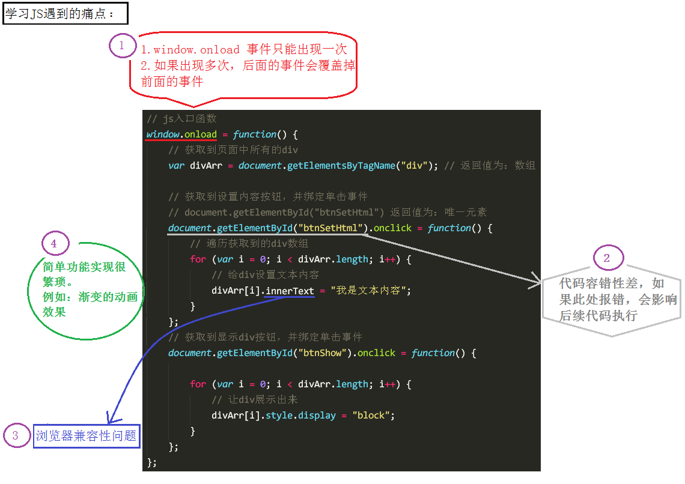
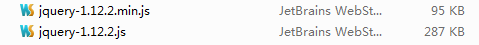

为何要学jQuery
JS的缺点

使用jQuery可以方便地解决这些问题
jQuery是什么
animate.js是我们自己封装的库，而jQuery是别人帮我们封装好的库。
JS库就是把常用的代码放到一个单独的文件中，用的时候直接引用到页面里面就可以了。
jQuery是JS的一个库，封装了开发过程中常用的功能，能够提高开发效率。
jQuery学什么
本阶段主要学习如何使用jQuery，其实就是学习jQuery封装好的一些功能方法，这些方法叫做API（Application
Programming Interface应用程序编程接口）。
这些API的共同特点是：几乎全都是方法。
所以，在使用时，都是方法调用，要加小括号()，小括号里面是相应的参数，参数不同，功能不同。
使用jQuery
使用步骤：
1引包 2写入口函数 3实现功能（事件处理）
入口函数就是指程序运行的时候最开始调用的函数，也就是程序开始的地方
开始使用jQuery
版本介绍
最常用的两个版本：
1.12.x和最新推出的3.0.0
两个版本的区别：3.0版本，不支持IE6、7、8 PC端的开发主要使用1.12.x版本
这几天主要学习1.12.x版本：

未压缩版（开发版）：代码可读性高，推荐在开发和学习环境中使用，方便查看源代码。
压缩版：去除了注释、换行、空格、并且将一些变量替换成了a,b,c之类的简单字符，基本没有可读性，推荐在生产和测试环境中使用，因为文件较小，减少网络压力。
引包注意
第一点：在使用jQuery之前，先把jQuery文件引到页面中来，如果在使用jQuery之前，没有引用jQuery文件，会报错：
第二点：src路径一定要写正确 如果src路径写错，也会报错：
入口函数
jQuery的入口函数:
第一种：
\$(document).ready(function(){ //内容 });
第二种：
\$(function(){ //内容 });
以上两种写法，作用完全相同，用哪个都可以
JS的入口函数：
window.onload = function() { //内容 };
jQuery入口函数与JS入口函数的区别
区别一：书写个数不同
JS入口函数只能出现一次，出现多次会存在事件覆盖的问题。
jQuery的入口函数，可以出现任意多次，不会覆盖。
区别二：执行时机不同
JS入口函数是在所有资源加载完成后，才执行。（包括：页面、外部js文件、外部css文件、图片等）
jQuery入口函数，是在文档加载完成后就执行。文档加载完成指的是：DOM树加载完成后，就可以操作DOM了，不用等到所有的外部资源都加载完成。
\$ 符号
\$就是一个普通的字符，可以用于变量名或函数名
JS命名规范允许出现的字符有：数字、字母、下划线、\$
var \$ = “字符串”;
var \$ = 123;
function \$(){
alert(“我是函数\$”);
}
\$(); // 调用上面我们自定义的函数\$
jQuery中的\$实际是一个函数
// jQuery中使用\$的主要场景
\$(document）.ready(function(){}); // 调用入口函数
\$(function(){}); // 调用入口函数
\$(“#btnShow”) // 获取id属性为btnShow的元素
\$(“div”) // 获取所有的div元素
jQuery里面的\$函数，根据传入参数的不同，进行不同的调用，实现不同的功能。返回的是jQuery对象
jQuery这个JS库，为了避免冲突，给这个最重要的\$函数还起了另外一个名字：jQuery
jQuery函数跟\$函数的关系：jQuery === \$;
jQuery对象
jQuery对象与DOM对象
DOM对象此处指的是：使用JS操作DOM的方法返回的对象
var btn = document.getElementById(“btnShow”); //普通的DOM对象
jQuery对象此处指的是：使用jQuery操作DOM的方法返回的对象
var \$btn = \$(“#btnShow”); // jQuery的DOM对象
jQuery拿到普通的DOM对象后会对其进行包装，让其成为具有jQuery方法的jQuery对象
jQuery对象转DOM对象
第一种方式
var btn1 = \$btn[0]; //通过索引的方式把DOM对象取出来（推荐使用此方式）
第二种方式
var btn2 = \$btn.get(0);//调用get()方法也可以
这两种方式使用哪一种都可以
DOM对象转jQuery对象
\$(普通的DOM对象)
图解：

jQuery选择器（重点）
JS中选择DOM元素的方法
考虑兼容性的话，JS提供的选择DOM的方法只有两个：
| JavaScript选择元素的方法： | |
|---|---|
| document.getElementById(); | 通过id属性获取指定元素 返回唯一的DOM对象 |
| document.getElementsByTagName(); | 通过标签名获取指定元素 返回DOM对象数组（即使只有一个元素） |
JS提供的选择DOM的方法太少，无法满足开发的需要，所以我们使用jQuery选择器来弥补这方面的不足
什么是jQuery选择器
jQuery选择器非常强大，它提供了一组方法，让我们更方便地获取页面中的元素。（类比：CSS的选择器）
强大的原因：jQuery实现了从CSS1到CSS3所有的选择器以及其他常用的选择器
各种选择器之间可以相互代替，所以，平时真正用到的只是最常用的选择器
基本选择器
| 符号(名称) | 说明 | 用法 |
|---|---|---|
| # | Id选择器 | \$(“#btnShow”).css(“color”, “red”); 选择id为btnShow的一个元素（返回值为jQuery对象，下同） |
| . | 类名选择器 | \$(“.liItem”).css(“color”, “red”); 选择含有类liItem的所有元素 |
| 标签名 | 标签选择器 | \$(“li”).css(“color”, “red”); 选择标签名为li的所有元素 |
| 用逗号隔开 | 并集选择器 | \$(“div,p,li”).css(“color”, “red”); div、p、li都会被选中 |
| 挨在一起 | 交集选择器 | \$(“li.current”).css(“color”, “red”); 选择标签名为li并且类名为current的元素 |
\@基本选择器
//id选择器 类名选择器 标签选择器 交集选择器 并集选择器
层级选择器、过滤选择器
| 符号(名称) | 说明 | 用法 |
|---|---|---|
| 层级选择器 | ||
| 空格 | 后代选择器 | \$(“#j_wrap li”).css(“color”, “red”); 选择id为j_wrap的元素的所有后代元素li |
| > | 子代选择器 | \$(“#j_wrap > ul > li”).css(“color”, “red”); 选择id为j_wrap的元素的所有子元素ul的所有子元素li |
| 常用的过滤选择器 | ||
| :eq(index) | 选择匹配元素中索引号为index的一个元素，index从0开始 | \$(“li:eq(2)”).css(“color”, ”red”); 选择li元素中索引号为2的一个元素 |
| :odd | 选择匹配元素中索引号为奇数的所有元素，index从0开始 | \$(“li:odd”).css(“color”, “red”); 选择li元素中索引号为奇数的所有元素 |
| :even | 选择匹配元素中索引号为偶数的所有元素，index从0开始 | \$(“li:odd”).css(“color”, “red”); 选择li元素中索引号为偶数的所有元素 |
筛选选择器（注：都是方法）
| 符号(名称) | 说明 | 用法 |
|---|---|---|
| find(selector) | 查找指定元素的所有后代元素（子子孙孙） | \$(“#j_wrap”).find(“li”).css(“color”, “red”); 选择id为j_wrap的所有后代元素li |
| children(selector) | 查找指定元素的直接子元素（亲儿子元素） | \$(“#j_wrap”).children(“ul”).css(“color”, “red”); 选择id为j_wrap的所有子代元素ul |
| siblings(selector) | 查找所有其他的兄弟元素（不包括自己） | \$(“#j_liItem”).siblings().css(“color”, “red”); 选择id为j_liItem的所有兄弟元素 |
| next(selector) | 查找下一个兄弟元素 | \$(“#j_liItem”).next().css(“color”, “red”); 选择id为j_liItem的下一个兄弟元素 |
| parent(selector) | 查找父元素（亲的） | \$(“#j_liItem”).parent(“ul”).css(“color”, “red”); 选择id为j_liItem的父元素 |
| eq(index) | 查找指定元素的第index个元素，index是索引号，从0开始 | \$(“li”).eq(2).css(“color”, “red”); 选择所有li元素中的第二个 |
jQuery基础课程 — DOM操作
样式操作（重点）
获取样式
// 参数表示要获取的 样式属性名称
\$(selector).css(“font-size”);
此时，会返回”font-size”样式属性对应的值。
设置样式
设置单个样式：
// 第一个参数表示：样式属性名称
// 第二个参数表示：样式属性值
\$(selector).css(“color”, “red”);
设置多个样式：
// 参数为对象
\$(selector).css({“color”: “red”,“font-size”:“30px”});
类名操作（重点）
添加类名
addClass(className) 为指定元素添加类名
\$(selector).addClass(“liItem”);
注意：已经说了是添加类名了，把名字传入即可，不要加点！
移除类名
removeClass(className) 为指定元素移除类名
\$(selector).removeClass(“liItem”); //移除指定类名
\$(selector).removeClass(); //不指定参数，表示移除所有类名
判断有没有某个类名
hasClass(calssName) 判断指定元素是否包含某个类名
\$(selector).hasClass(“liItem”);//返回true或false
切换类名
toggleClass(className) 切换类名，如果没有指定类名就添加，有就移除。
\$(selector).toggleClass(“liItem”);
Data属性
在元素上存放数据,返回jQuery对象。
data(obj) 可传入key-value形式的数据。
key:存储的数据名
value:将要存储的任意数据
一个参数是获取
两个参数是设置